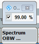

Occupied Bandwidth
If enabled via the config tree or the "Spectrum OBW" hotkey, the OBW results are shown in the transmit spectrum mask view, see Figure "IEEE transmit spectrum mask results (OFDM; OBW enabled) ".
The OBW is indicated by its upper and lower edges in the transmit spectrum mask diagram (orange vertical lines). The numerical results are presented in a dedicated "OBW" table below the "Margin" table. For 80+80 MHz signals, the OBW results are available per segment.
To set the OBW percentage quickly, use the "Spectrum OBW" hotkey.

The OBW percentage refers to the power in the overall covered frequency range (four times the channel bandwidth). |
For query of the results via remote control, see: